集成学习通过训练多个分类器，并将这些分类器组合起来以达到更好的预测性能。集成学习通常会比单模型的结果好，可以在提高精度的同时降低overfitting，且模型间的差异越大（diversity）提升效果越显著，这个差异性可以体现在数据、特征、模型、参数等多个维度。
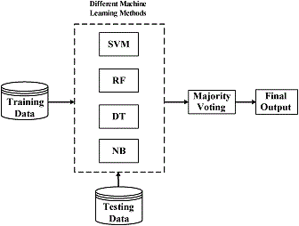
下面一个例子可以看到简单的ensemble就可以达到远高于单个分类器的效果：
比如有三个分类器，准确率都为0.7，如果采用多数投票的方式进行ensemble，那么得到的正确率为：0.7*0.7*0.7+0.3*0.7*0.7+0.7*0.3*0.7+0.7*0.7*0.3=0.788
Ensemble Method
主要的方法有Bagging和Boosting。另外一种是stacking（也有叫Hybrid的），即将多个模型的输出作为特征，使用单模型将预测值组合起来，常用LR做模型组合。
Bagging和Boosting
Random Forest使用了Bagging的方法，GBDT、AdaBoost使用的是Boosting的方法。两者在实现上的区别在于：
- 训练集：Bagging每一轮从样本中做有放回的随机采样；Boosting每一轮采用的样本分布都和上一轮的学习结果有关
- 样例权重：Bagging随机采样权重相同；Boosting根据错误率不断调整样例的权值，错误率越大则权重越大（不完全是这样）
- 预测权重：Bagging所有预测函数的权重相等；Boosting每个模型都有相应的权重，对于分类误差小的模型会有更大的权重
- 并行化：Bagging各个预测函数可以并行生成；Boosting必须顺序生成。
variance & bias
模型的准确度Error = Bias + Variance, Bias反映的是模型在样本上的输出与真实值之间的误差，即模型本身的精准度（拟合程度，由underfitting造成）；Variance反映的是模型每一次输出结果与模型输出期望之间的误差，即模型的稳定性（泛化能力，由overfitting造成）。
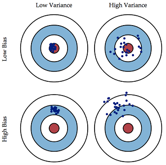
两者往往互相影响不可兼得，需要做tradeoff。比如降低决策树的高度、增加正则项、降低k近邻算法中的k值，牺牲bias降低variance。
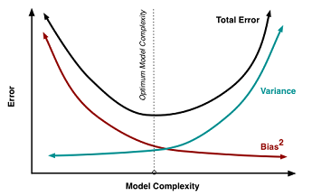
Boosting通过将若干个弱分类器合成一个强分类器，主要降低Bias。因此GBDT中每棵树的深度都很浅，通过boosting消除单棵树的bias；
Bagging通过将多个弱分类器取平均，主要降低Variance。因此RF每棵树都是充分学习的（过拟合的）树，通过bagging消除单棵树的variance。
Adaboosting和Gradient Boosting的区别
Adaboosting在每次迭代时增加上次分类错误的样本的权重，减少分类正确的样本的权重。最后将得到的许多分类器综合起来。
Gradient Boosting每次并未改变样本的权重来拟合下一棵树，而是将之前所有模型的预测值与目标值的残差作为新的目标进行学习。
GBDT
GBDT(Gradient Boosting Decision Tree) 又叫 MART（Multiple Additive Regression Tree)，是Ensemble Model的一种实现方式，由多棵决策树组成，所有树的结果累加起来做最终答案。
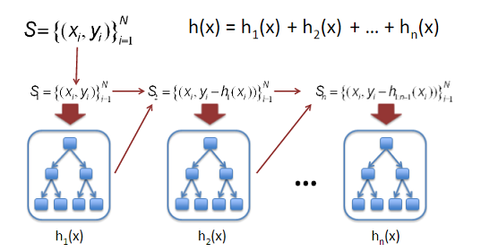
Decision Tree
选取Decision Tree作为Gradient Boosting Modeling的弱分类器，得益于Decision Tree本身的一些良好特性，比如可以处理missing feature、可以不理不同scale的特征值不需要归一化、可以自动过滤无关特征等等。虽然GBDT可以用来解决分类问题，但是GBDT中的树都是回归树，不是分类树。
训练参数
- the number of gradient boosting iterations树的数量
- 学习速率，通常小于0.1，最优参数与树的数量有关
- Stochastic gradient boosting，每棵树只从样本中随机选取一部分进行训练，一般选[0.5,0.8]
- 树的深度，一般不超过6
- 叶子节点的最少样本数，根据样本量而定，通常与树的深度功能相同
并行化
预测时每棵树之间互不影响可以并行预测最后累加。训练时由于树与树之间是迭代的关系，无法独立训练每棵树，但是可以在每棵树的训练过程中进行并行化，其中并行计算量最大的特征分裂点选取收益最大。
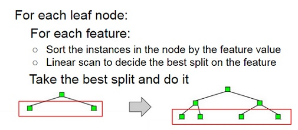
- Parallelize Node Building at Each Level: 建树过程中每一层级中的node都是相互独立的，可以直接并行（第一个for循环），但是会引起数据加载不均衡的问题workload imbalanced.
- 特征分裂并行化：每个node上查找split分割点时候并行(第二个for循环)，但对一些小的节点，并行带来的收益可能远小于数据切换以及进程通信等带来的开销
- 在每一层对特征进行并行化：也就是把两层循环的顺序换一下，在外层进行排序省去了重复排序的开销。由于每个feature下的样本数相同，避免了以上两种方法workload不平衡和Overhead过小的缺点
- 特征&样本并行化：将样本按行分成N份，分别在N个节点上做计算梯度计算、预估值及采样等工作；每个节点维护一个特征的所有特征值，计算最佳分裂点并同步到所有节点，每个节点上仅对这个节点的样本进行分裂
LambdaMART
LambdaMART模型从名字上可以拆分成Lambda和MART两部分，MART（GBDT）表示底层训练模型，Lambda是MART求解过程使用的梯度。LambdaMART可以看做提升树版本的LambdaRank，而后者又是基于RankNet发展而来的。所以，搞清楚三者各自的原理以及三者间的关系可以帮助我们加深对LambdaMART的理解。
RankNet
RankNet是一个pairwise的LTR算法，提出了一种概率损失函数来学习Ranking Function。将两个候选集之间的相对排序位置作为目标概率，使用类似于逻辑回归中的交叉熵（cross entropy loss function）作为概率损失函数，通过梯度下降的方法求解。
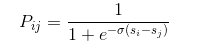
NDCG
NDCG(Normalized discounted cumulative gain)是用来衡量排序质量的常用指标。其中一种实现公式为：
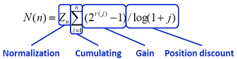
其中gain代表的是每个结果的质量，position discount使得排名越靠前的结果权重越大。以NDCG为优化目标，保证了结果总体质量好的情况下，把更高质量结果排在更前面。其Gain以及Discounted的计算可以随着需求而变化。
LambdaRank
pairwise中常用的NDCG等指标与RankNet中的交叉熵概率损失函数存在一定的差异，而且是不连续的无法求梯度，将其直接作为优化目标是比较困难的。LambdaRank选择了直接定义cost function的梯度来解决上述问题。Lambda梯度由两部分相乘得到：(1)RankNet中交叉熵概率损失函数的梯度；(2)交换Ui，Uj位置后评价指标的差值。
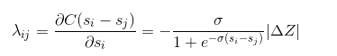
Lambda梯度更关注位置靠前的优质文档的排序位置的提升。有效的避免了下调位置靠前优质文档的位置这种情况的发生。相比RankNet的优势在于考虑了评价指标，直接对问题求解，所以效果更好。
LambdaMART
LambdaMART使用一个特殊的Lambda值来代替GBDT中的梯度，也就是将LambdaRank算法与MART算法结和起来。
xgboost
gboost是Gradient Boosting的一种高效实现，训练速度和效果与GBDT相比都有大幅提升，成为各种数据挖掘比赛中的必备武器。其中主要的优化点：
- xgboost的目标函数分为了两个部分，其中正则项控制着模型的复杂度，包括了叶子节点数目T和leaf score的L2范数。
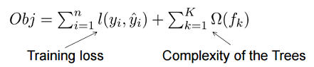 - 传统GBDT在优化时只用到一阶导数信息，xgboost则对代价函数进行了二阶泰勒展开，同时用到了一阶和二阶导数，加速了求解过程。
- xgboost借鉴了随机森林的做法，支持列抽样(column subsampling)，不仅能降低过拟合，还能减少计算
- Shrinkage: 相当于学习速率。将叶子节点的权重乘上该系数，主要是为了削弱每棵树的影响，让后面有更大的学习空间。
- 传统的分裂算法采用exact greedy algorithm寻找最优点（即先排序然后逐一遍历）。而xgboost实现了一种近似算法（Weighted Quantile Sketch）大致的思想是根据百分位法列举几个可能成为分割点的候选者，然后从候选者中根据上面求分割点的公式计算找出最佳的分割点。
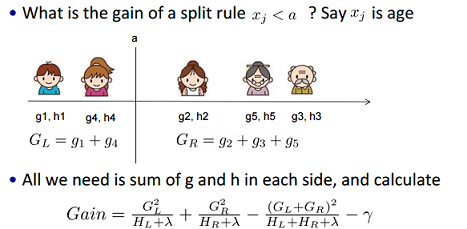 - 针对稀疏数据的特征值缺失问题，根据特征不缺失的数据指定默认方向。
- 特征列排序后以block的形式存储在内存中，在迭代中可以重复使用。并且收集每一列统计值是可以并行化的。
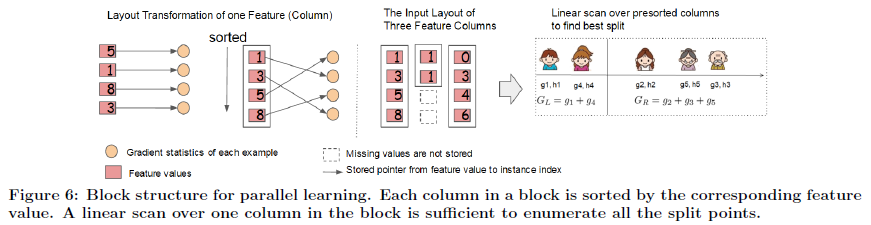 - cache-aware：以行计算梯度时会导致内存的不连续访问降低效率。先将数据收集到线程内部的buffer，然后mini-batch的形式计算提高效率。
- 大数据无法全部导入内存，使用block compression和block sharding来提高out-of-core computation。
参考
- 周志华老师的Ensemble Learning 这里只是简介，还有相同名字的一本深度讲解的书
- 知乎：机器学习中的Bias(偏差)，Error(误差)，和Variance(方差)有什么区别和联系？
- Understanding the Bias-Variance Tradeoff
- Parallel Gradient Boosting Decision Trees
- LambdaMART笔记讲了RankNet、LambdaRank和LambdaMART之间的联系
- XGBoost: A Scalable Tree Boosting System 发表在KDD2016的官方paper
- 陈天奇的slides
- 知乎：机器学习算法中GBDT和XGBOOST的区别有哪些？